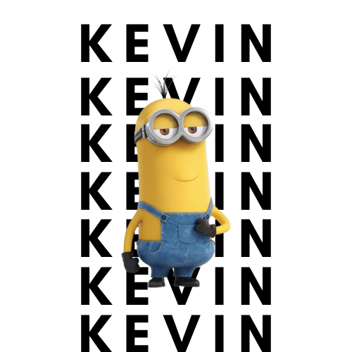

Kevin the Minion:

Kevin is a tall, two-eyed young man with curly hair who is often seen wearing golf uniforms. He loves playing golf and cricket and is the third leader in the quest for a new king among the Minions.In the Despicable Me franchise, Minions are an all-male species of fictional yellow creatures that serve villains. They speak a fictional polyglot language called Minionese and have common English names like Dave, Kevin, Stuart, Bob, Mel, and Otto
. Kevin appears in both "Despicable Me" and "Despicable Me 2," showcasing different characteristics in each movie
5
.